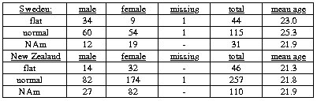
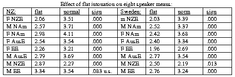
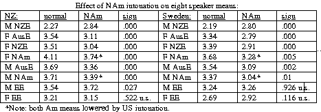
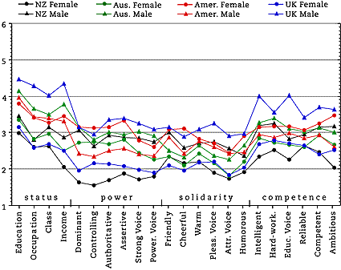
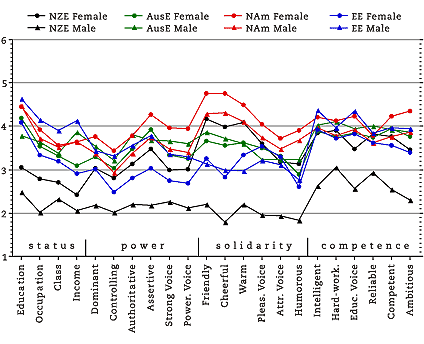
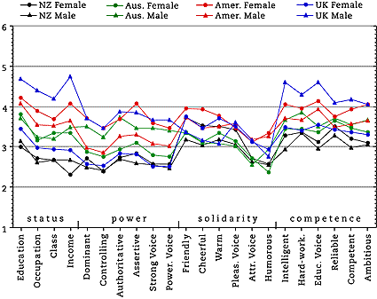

Evaluating English Accents WorldWide: The Impact of Intonation
(Adapted from a paper by Kirk Sullivan, Donn Bayard, and James Green presented at the
Eighth International Conference on Language and Social Psychology, Hong Kong, July 12, 2002.)
Introduction
Many visitors to this website will have been struck by some of the contrasts in
the speaking style of the eight different voices used. As mentioned in the
Methods section, it has been recognised for years
(e.g., Giles and Powesland
1975: 90) that paralinguistic variation in things like speed of speech, number of
hesitations, and intonational variability do have an important effect on listener
evaluations, and every effort was made to control these as much as possible.
While we were successful in keeping variability in speed and hesitations to a
minimum, intonation is much harder to control for. Several people have commented
to us about the monotonous reading tone of the male NZE speaker and wondered if
it was related to his low ratings by almost all of the groups surveyed so far.
The converse is true for the lively, variable intonation of the female NAm voice
and her uniformly high ratings by all groups. What we are concerned with here is
not the normal physical variation in intonation between males and females, but in
what has been called "pitch dynamism"—roughly, the amount of overall variability
of intonation in a speech segment. Although this term is far from satisfactory
(Daly and Warren 2001: 87-88), there is certainly variability in the amount of
pitch dynamism in the voices used here, and it is important to try to judge the amount
of impact this variability has on evaluations.
Judging the impact: samples
The question is an important one for this study and many others, and we wished
to investigate the problem in some depth. Since we already had a large sample of
native-English-speaking New Zealanders (257) and a relatively large sample of L2
speakers of English from Sweden (115), we decided to use these two countries for
testing. This would also allow a check on differences in impact on native versus
non-native speakers.Sullivan first produced two new versions of the stimulus
accent tape through digital manipulation of the sound. The first version
involved anchoring all eight voices to a basically "flat" F0 frequency to produce
what we nicknamed the "Dalek" tape (after Dr Who's monotone robots). The second
tape used for its F0 the intonation patterns of the two NAm voices, each applied
to the other six voices according to the relevant gender. At Umeå
University Sullivan played the flat F0 tape for 44 Swedish students (not used in
the original test), while the NAm F0 version was heard by 31 new students. At
the University of Otago Bayard and Green played the flat and NAm tape to samples of 46
and 110 students. We thus had
adequate to large samples of opinion from both universities in all three
conditions:

Judging the impact: results
A) Flat intonation
The results show that intonational variation does indeed have a very significant
effect on listener evaluations. Manovas of all 22 traits used in our evaluations
were performed contrasting flat versus normal intonation and the normal versus
NAm pattern. In the case of both Swedish and New Zealand listeners the flat
tonal pattern lowered d the meaning ratings of all traits to a highly significant
(p < .000) degree.1 Intonation had its greatest impact on the
solidarity-associated traits, followed by those associated with competence, then
power, and had the smallest effects on the four status traits. Flat intonation
also had a marked effect on all mean speaker scores except for the male EE voice
as heard by New Zealanders. In all cases this effect lowers the mean speaker
score, except for the male NZE voice, which is raised by listeners from both
nations.

B) American "expressive" intonation
The effects of the NAm intonational pattern are not as clear-cut as with flat
intonation, but they are still highly significant. In general, the mean values
for both traits and speakers are lowered vis-a-vis normal intonation. The
Swedish listeners lower the means for seven power traits (strong voice,
ambitious, dominant, assertive, controlling, powerful voice, and authoritative)
to a highly significant degree, but no others are affected.2

In the case of New Zealand effects are more variable. NAm intonation lowers the
means for 13 traits significantly, but also raises the status traits on income (p
= .043) and class (p = .444—n.s.). The means for five of the eight speakers
(female AusE, female NZE, male AusE, female NAm, male NAm) are lowered
significantly by Swedish listeners, but the mean for the monotonous male NZE voice
is raised from 2.2 to 2.8 (p < .000). New Zealand listeners also lower means for
the same five speakers, but raise not only the male NZE voice but the male EE
speaker as well.
In terms of variation in individual traits, this is most easily presented by
using separate graphs for perceived flat, normal, and NAm intonation means. We
present only those for the New Zealand data, as it is based on larger samples;
the Swedish data are essentially similar.
A. Flat Intonation Pattern
46 native born New Zealand Otago University students
32 females, 14 males, mean age 21.3
(collected by Donn Bayard and James Green)

Points to note:
Female NZE voice replaces male NZE voice at bottom of ratings.
Male NZE voice is now in middle range.
Male EE voice replaces female NAm as overall leader, but usually by just a small
margin.
Female NAm voice is now usually in second or third place.
B. Normal Intonation Pattern
257 native born New Zealand Otago and Victoria University students
174 females, 82 males, 1 missing, mean age 21.8
(collected by Donn Bayard and Ann Weatherall)

C. NAm Intonation Pattern
110 native born New Zealand Otago University students
82 females, 27 males, mean age 21.8
(collected by Donn Bayard and James Green)

Points to note:
The male NZE voice returns to its position at bottom, along with the female NZE.
The female NAm voice has a slight lead in solidarity traits, and is second in the
other three dimensions.
The male EE voice attains its "traditional" lead in the status and competence dimensions.
CONCLUSIONS
We are now in a position to make a general statement about the relative
importance of intonation patterns vis-a-vis the effect of phonological accent:
While intonation clearly has a significant effect, it does not seem to be
responsible for the generally higher ratings of the female NAm voice in most of
the samples. Note that mean values for both NAm speakers are lowered when NAm
intonation is applied to the other six voices as well. All others are also
lowered except for the male NZE and male EE voices. Hence it seems a case can be
made for the widely recognised NAm phonology and its associations
contributing to their high scores.
However, the NZE male voice is raised by addition of NAm intonation, so it does
help to combat the negative effect of tonal flatness.
Status trait means and the male EE speaker means are the least affected by NAm
intonation, although it does raise (slightly) mean values for class and income.
It thus seems likely that phonological characteristics of Near-RP accents, rather
than any associated intonational pattern, convey the status connotations
traditionally associated with the accent.
In general then, while intonation is clearly important, phonological accent
appears to have the greater effect. Obviously further research along the lines
used here would prove of great value.
NOTES
1. For those interested in the exact statistics. Effect of flat intonation on
all 22 trait means: Sweden: F=7.96 (df 22,134) p < .000; New Zealand: F=6.44
(df 22, 271) p < .000. Flat intonation statistics for speaker means: Sweden:
F=30.90 (df 8, 150) p < .000. New Zealand: F=42.27 (df 8, 290) p < .000.
2. Overall NAm intonation statistics for trait means: Sweden: F=2.25 (df
22,121) p =.003; New Zealand: F=4.09 (df 22,340) p <.000. NAm intonation
statistics for speaker means: Sweden F=9.42 (df 8,137) p <.000; New Zealand:
F=20.04 (df 8, 354) p < .000).
REFERENCES
Daly, Nicola, and Paul Warren. 2001. Pitching it differently in New Zealand
English: speaker sex and intonation pattern. Journal of Sociolinguistics 5(1):
85-96.
Giles, Howard, and Peter F. Powesland. 1975. Speech Style and Social
Evaluation. London: Academic Press.
Created by:
Owen Baxter,
Modified: 10 Jun 2002, Made with Macintosh